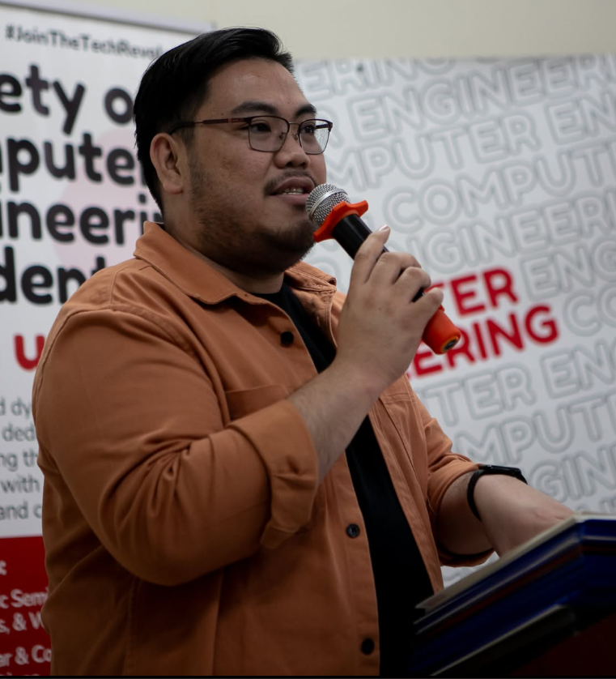
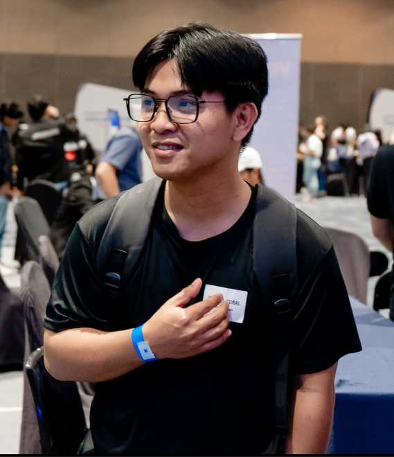

The faculty of the University of the East Computer Engineering program comprises experienced academic educators and industry professionals specializing in embedded systems, computer networking, software development, and digital hardware design.

• Professional Computer Engineer (PCpE)
• Doctor of Information Technology
• University of the East, Manila
• Comprehensive Exam Stage
• Focus: embedded systems, object-oriented programming, and software design
• Handles core courses such as Embedded Systems, OOP, Data Structures, and the Software Design Laboratory
• BSCpE, University of the East (2000)
• MEng-CpE, Pamantasan ng Lungsod ng Maynila (2006)
• DBA, University of the East
• One of the founding faculty of UE CpE Manila
• Focus: programming logic, computer architecture, logic circuits, and computer networks with cybersecurity
• Handles hardware logic, computer networks, cybersecurity, and programming courses
• BSECE, FEATI University (1993)
• MES, University of the East (2017)
• Focus: electronics and PC troubleshooting
• Handles electronics courses and mentors students in PC maintenance and hardware diagnostics

• Focus: software engineering and microprocessor systems
• Guides students through software design principles and full-stack Arduino-based microprocessor projects
Beyond the classroom, faculty mentor the student org and the projects that come out of it.